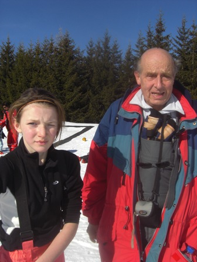
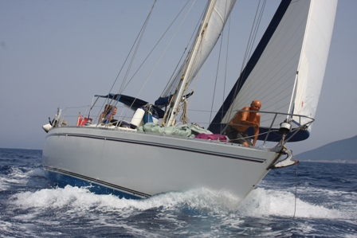
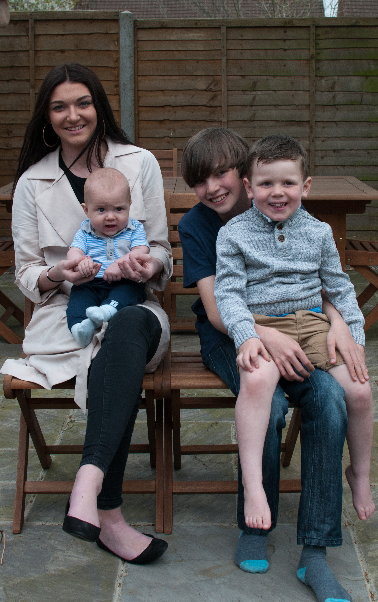
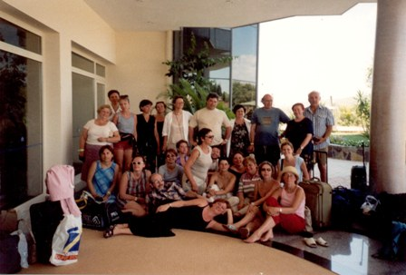

| Department
Staff Members
Simon
Clarke
 Simon
Clarke retired in
September 2009 and is now Emeritus
Professor. From 1991 until he retired he directed the Russian Research
Programme
in the Department, which studied various aspects of labour and
employment relations in Russia and the former Soviet Union in
collaboration with teams of Russian researchers associated with the Institute
for Comparative
Labour Relations Research (ISITO), an
inter-regional organisation
of labour researchers, based in Moscow with research teams in Moscow,
Samara, Kemerovo, Perm, Ekaterinburg, Ulyanovsk, St Petersburg and
Syktyvkar. Since 1998 the research programme has extended to
comparative research on the development of trade unions and industrial
relations in China and, more recently, in Vietnam. Full details of the
research and access to many of our publications can be found on the
website of the research
programme. Simon
Clarke retired in
September 2009 and is now Emeritus
Professor. From 1991 until he retired he directed the Russian Research
Programme
in the Department, which studied various aspects of labour and
employment relations in Russia and the former Soviet Union in
collaboration with teams of Russian researchers associated with the Institute
for Comparative
Labour Relations Research (ISITO), an
inter-regional organisation
of labour researchers, based in Moscow with research teams in Moscow,
Samara, Kemerovo, Perm, Ekaterinburg, Ulyanovsk, St Petersburg and
Syktyvkar. Since 1998 the research programme has extended to
comparative research on the development of trade unions and industrial
relations in China and, more recently, in Vietnam. Full details of the
research and access to many of our publications can be found on the
website of the research
programme.
Simon Clarke's main publications are The
Foundations of Structuralism; Marx, Marginalism
and Modern
Sociology; Keynesianism, Monetarism and the Crisis
of the State; Marx's Theory of Crisis
and (with Peter
Fairbrother, Michael Burawoy and Pavel Krotov) What About the
Workers? Workers and the Transition to Capitalism in Russia;
(with
Peter Fairbrother and Vadim Borisov): The Workers' Movement
in
Russia. He has translated, edited and introduced a series of
books
published by Edward Elgar: Management and Industry in Russia;
Conflict and Change in the Russian Enterprise;
Labour
Relations in Transition; The Russian Enterprise in
Transition; Structural Adjustment without Mass
Unemployment?
and The State Debate. His most recent books are (with
Sarah Ashwin)The
Formation of a Labour Market in Russia, Trade
Unions and Industrial Relations in
Post-Communist Russia
(Palgrave, Basingstoke
and New
York, 2002) , The
Development of Capitalism in Russia
(Routledge,
2007), (with Tim
Pringle) The Challenge of Transition: Trade
Unions in Russia, China and Vietnam (Palgrave,
2010).
Simon
and Lin have two children, Sam and Becky, and four grandchildren,
Jade, Kai, Charlie and Bobby. Simon is a keen cyclist,
going out with the Coventry
CTC
every Sunday and
Tuesday through the
winter and on our annual Easter tour. Simon and Lin
now spend their summers on their yacht, a Moody 422, in the
Eastern Mediterranean. Our blog is at miahara.blogspot.com
.
You can find Simon's CV here,
where you can access many published
and unpublished materials. Please note that for copyright reasons
published materials are only available in final draft versions and so
should not be cited or referenced. You can find my reading guide to
Capital here. You can
buy kindle versions of my out of copyright books for next to nothing
and I will put free copies on Google books
You can
e-mail: Simon.Clarke@warwick.ac.uk

  
|
|